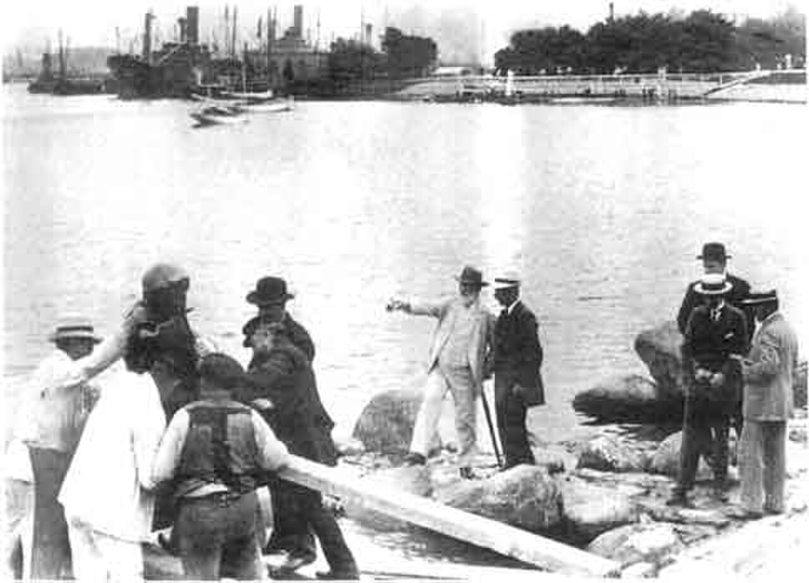
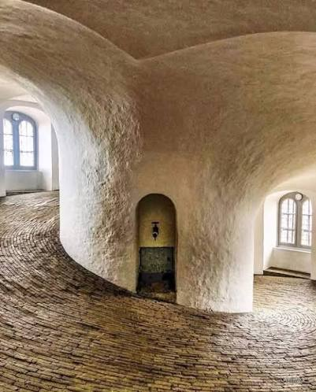

CityLoop Quest Copenhague


La Petite Sirène possède une histoire plus mouvementée que son attitude mélancolique ne le laisse croire. Commandée par Carl Jacobsen et installée en 1913, elle a été décapitée, couverte de peinture et déplacée lors d’actes de vandalisme. La tête originale n’a jamais été retrouvée après l’attaque de 1964. La statue visible aujourd’hui conserve pourtant sa place et son pouvoir d’attraction, preuve qu’un petit monument peut survivre à une célébrité envahissante.

La Tour Ronde abrite une énigme sur sa façade : une inscription mêlant mots et symboles prend la forme d’une prière royale où Christian IV sollicite la sagesse et l’équité divines. La rampe hélicoïdale a vu monter chevaux et charrettes. En 1716, le tsar Pierre le Grand serait arrivé à cheval, tandis que son épouse suivait en voiture, scène parfaitement adaptée au goût du souverain russe pour les démonstrations.

Sous Christiansborg reposent les murailles du château d’Absalon, découvertes lors de la construction du palais actuel. Plus haut, la tour offre une vue gratuite selon les horaires. Le site permet donc de parcourir près de neuf siècles verticalement : forteresse médiévale au sous-sol, démocratie contemporaine dans les salles et panorama urbain au sommet.
Le reflet du soleil sur la sphère de la tour de télévision de Berlin est surnommé la revanche du pape ; Copenhague possède une plaisanterie architecturale différente à l’église de Notre-Sauveur. La tradition affirme que l’architecte Lauritz de Thurah se serait suicidé après avoir constaté que l’escalier tournait dans le mauvais sens. L’histoire est fausse : il mourut paisiblement sept ans après l’inauguration. La légende montre surtout combien la flèche impressionnait les contemporains.
Enfin, l’expression danoise “at tage til København” a longtemps signifié plus qu’un déplacement : monter à la capitale, chercher travail, spectacle ou liberté. Andersen le fit adolescent ; des milliers d’ouvriers suivirent au XIXe siècle. Derrière les cartes postales se trouve une ville d’arrivées successives. Repérer une date sur une façade, une pierre de rempart ou un nom étranger sur une boutique permet de retrouver ces couches humaines que les grands monuments ne racontent pas seuls.